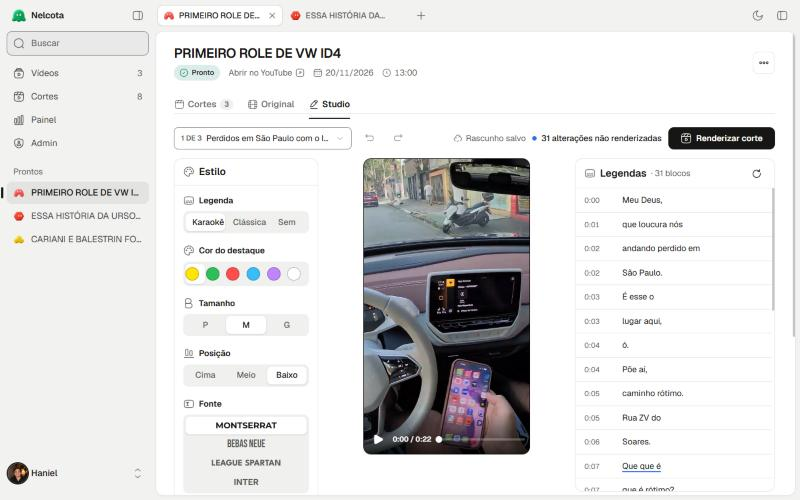
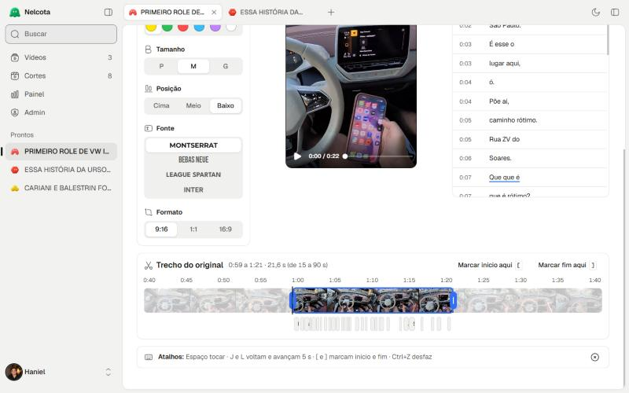
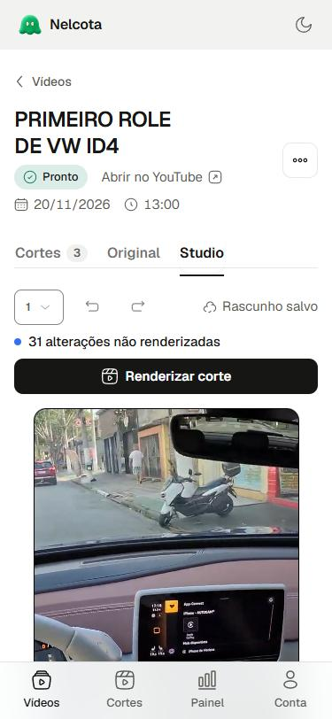
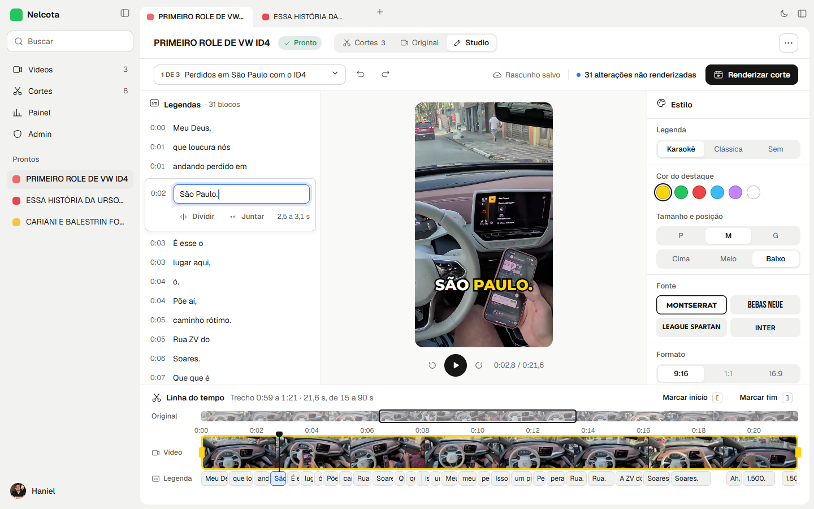
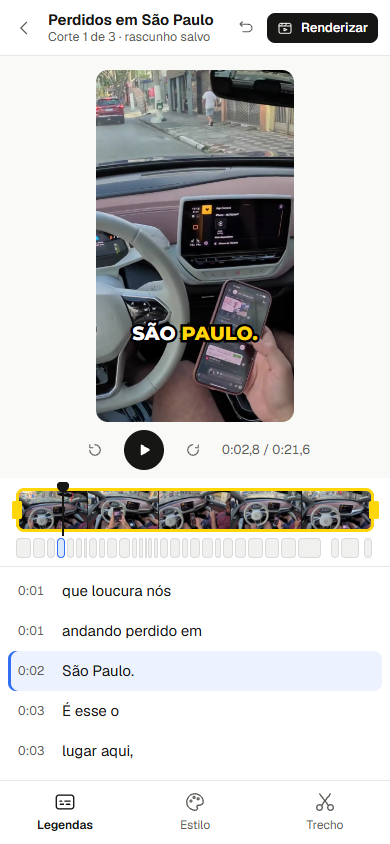
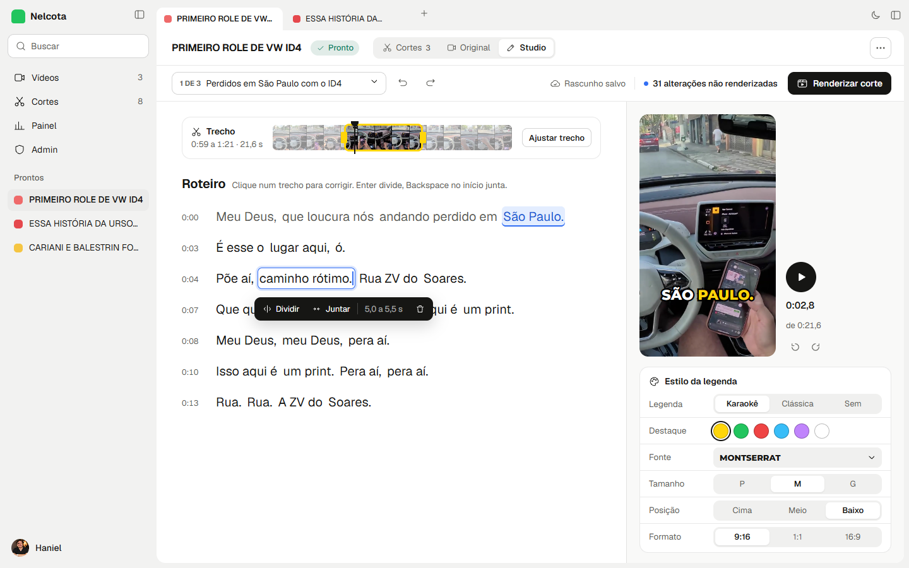
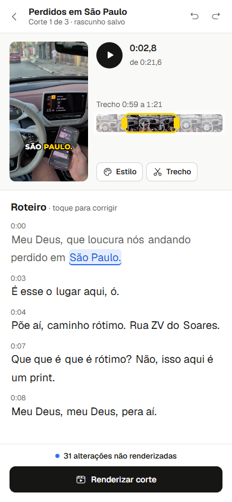
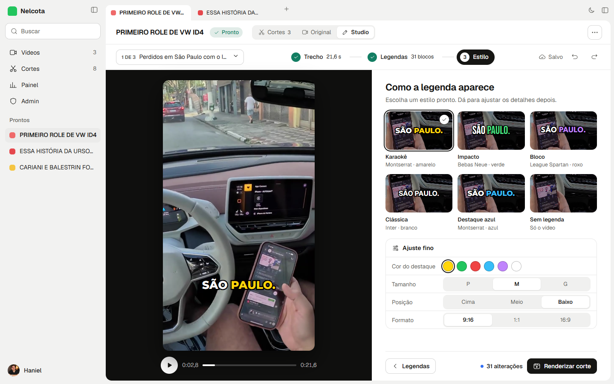
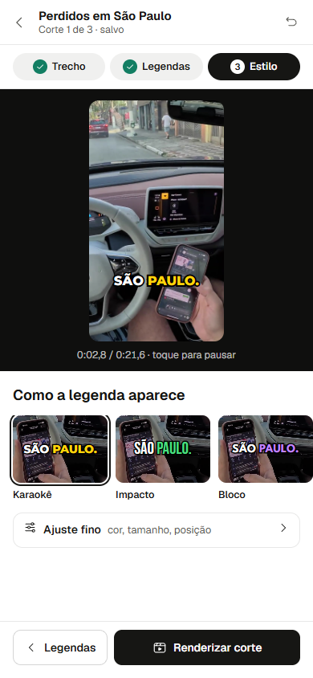

Mesmo corte, mesmas 31 legendas e quadros reais do vídeo. As três resolvem o que pesa hoje: a tela rola (a linha do tempo fica abaixo da dobra), legendas e estilo brigam com o vídeo pelo espaço, os blocos na linha do tempo são ilegíveis e o celular empilha tudo numa página longa. Em todas, o cabeçalho do vídeo vira uma linha só e o Studio ocupa a altura da janela, sem rolar a página. Escolha uma.








